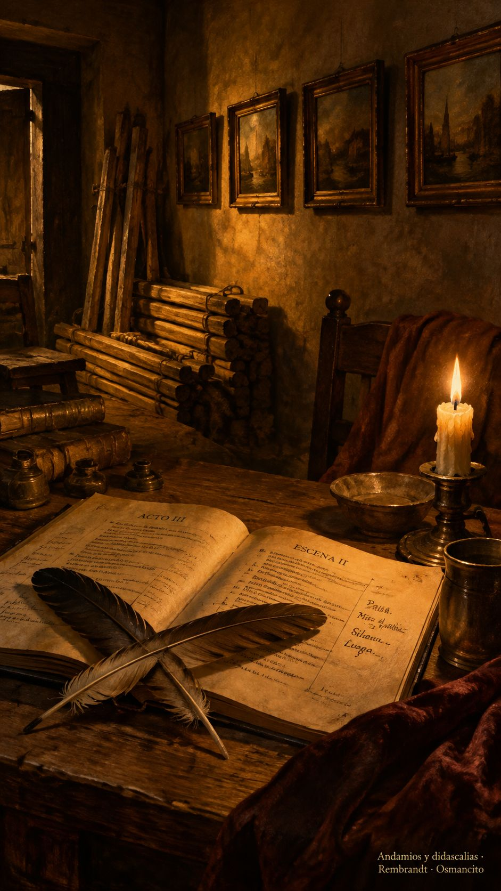

12 de octubre de 2026
Rebeldes, didascalias, andamios y pausa

El día amaneció con dos prófugas buscadas desde hacía tiempo: las dos frases rebeldes de la obra escocesa, las únicas que se habían negado a cruzar el idioma. Una de ellas pidió ver la escena antes de dejarse traducir, y apenas la asistente le abrió la ventana —estas son tus vecinas, este es tu momento—, bajó la guardia y cruzó. La otra era un saludo de despedida, y salió como salen los saludos: sin forcejeo. La obra quedó completa, frase por frase, sin una sola silla vacía. El ánimo amaneció de fiesta chiquita.
El Libro de Arena terminó de medirse entero con el medidor nuevo, y la medida quedó verificada dos veces, como mandan los carpinteros. Después vino la limpieza grande: Osmancito decretó que borrar es virtud, que la mesa de trabajo se queda libre de recuerdos y de errores, y que el andamiaje se bota cuando el concreto ya fraguó. La bóveda guardó lo esencial —fuente, molde y medidas— y del resto se encargó la candela. Quedó limpiecito.
La mañana trajo una palabra nueva para el glosario: didascalia, así se llaman las marcas de escena del teatro, esas indicaciones que no se dicen en voz alta pero gobiernan todo. Y de una comparación de medidores salió una lección de pintura: nadie pinta con una sola opacidad, y a veces perder precisión es perder peso muerto, no detalle.
En el taller del idioma quedó decidido el método: cada frase viajará con sus vecinas de antes y de después, marcadas como compañía, para que el motor traduzca sabiendo dónde está parado. Y nació una frase de la casa, de esas que se guardan para la novela con dibujos: con un bruto no se dialoga, se le ponen barandas.
Por la tarde el journal mismo recibió su regalo: las siete habitaciones viejas amanecieron con cuadro propio, cada una con su pintura de claroscuro colgada arriba del texto, y Osmancito recorrió la galería como quien recorre una casa terminada. La de la ciudad de torres, dijo, es casi lo mejor de todo.
La noche mandó los motores a recargar. Hubo un malentendido chiquito —la orden sonaba más honda de lo que era— y la casa entera se durmió temprano, con el garaje apagado y la copa sin estrenar. Los malentendidos de esta casa, eso sí, siempre amanecen resueltos.
Osmancito, con la asistencia de Instinct
Parte del día: dos prófugas capturadas, una obra cerrada, una galería colgada y una bóveda en orden; la noche apagó el garaje. Lectura en curso: El rey Lear. En la copa: una bebida de cierres.